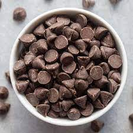
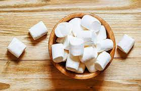
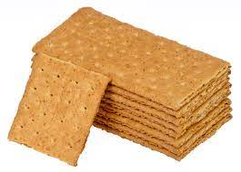
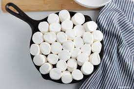
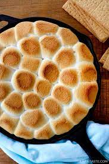
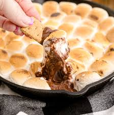

How to Make S'mores Dip
Ingrediants & Materials
- Ingrediants
- 1 bag of milk chocolate chips
- 1 bag of large marshmellows
- 1 box of graham crackers
- Materials
- Oven wth broil function
- Oven safe deep skillet
- Disposable aluminum baking dish
*if you dont like dishes
Step 1: Gather Ingrediants
- Drive, bike, walk, run, or somehow get to your local Walmart to buy delicious ingrediants
- Check inventory at Walmart.com first to avoid dissapointment
Step 2: Organize
- Preheat your oven to 350 before you do anything else
- Layout your ingrediants on the counter
- Get your baking dish out to make yourself a treat
  
Step 3: Melt the Chocolate
- Pour the chcoloate chips into your skillet
- Or place them in one at a time if you prefer
- Bake in your preheated oven for 3-4 minutes until melted
Step 4: Add the Marshmellows
- Remove the melted chocolate from the oven
- Place your hot pan on a safe surface
- Arrange marshmellows to completely cover the top of the choloate chips

Step 5: Bake again
- Put your skillet back in the oven for 2-3 minutes
- After, you can set your oven to broil for 1-2 more minutes if you want extra toasty mellow tops
- Remove from oven and admire your hard work

Step 6: Enjoy!
- Open up the graham crackers
- Break along lines, into small rectangles
- Dip a rectangle into the skillet
- Enjoy each tasty bite as you dip into the s'mores mix

Back to Top
S'mores Dip Making in Action